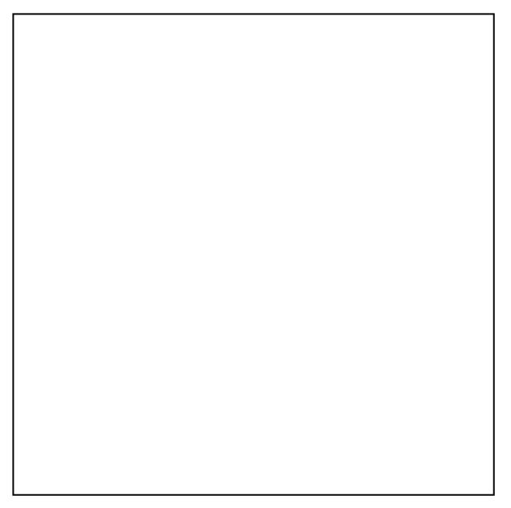
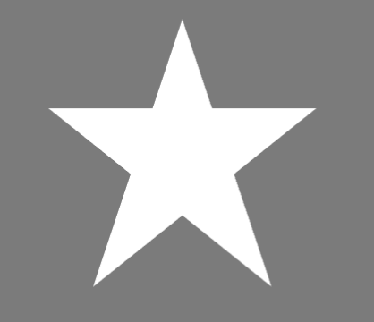
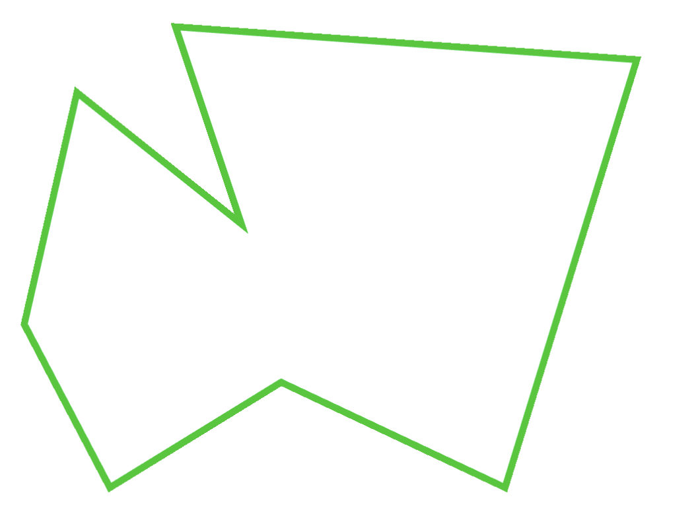

Your sketch:
In this exercise, you will create different complex shapes using Vertex.
You should refer to the lecture and p5.js refrence on Vertex() for help
We will draw a few shapes so make sure your canvas is a good size (700,700). Remeber you can always increase the size later.
When thinking about complex shapes we know we need two things, Lines and Vertices. When thinking about a square in this way we know the following are required
To complete this task create a square by adding 4 Vertex points to the canvas.
Remeber:
beginShape and endShapeendShape as shown below.endShape(CLOSE);
Expected output:

In the lecture we saw how Vertex can be used to create a star.
For this task you will recreate this output.
To complete this task create a square by
Vertex points to the canvas.noStroke to hide the linesbackground so the shape can be seenExpected output:

Now we have used Vertex it is time to be creative!
For this task create any shape and use your knowlage of p5 to add colour and change the stroke
You do not need to recreate the same output I have below, it is just an example
Example output:
